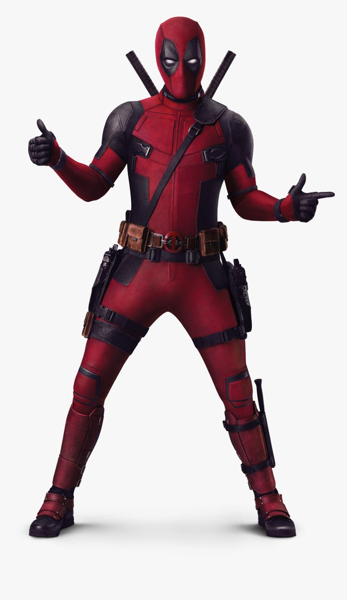
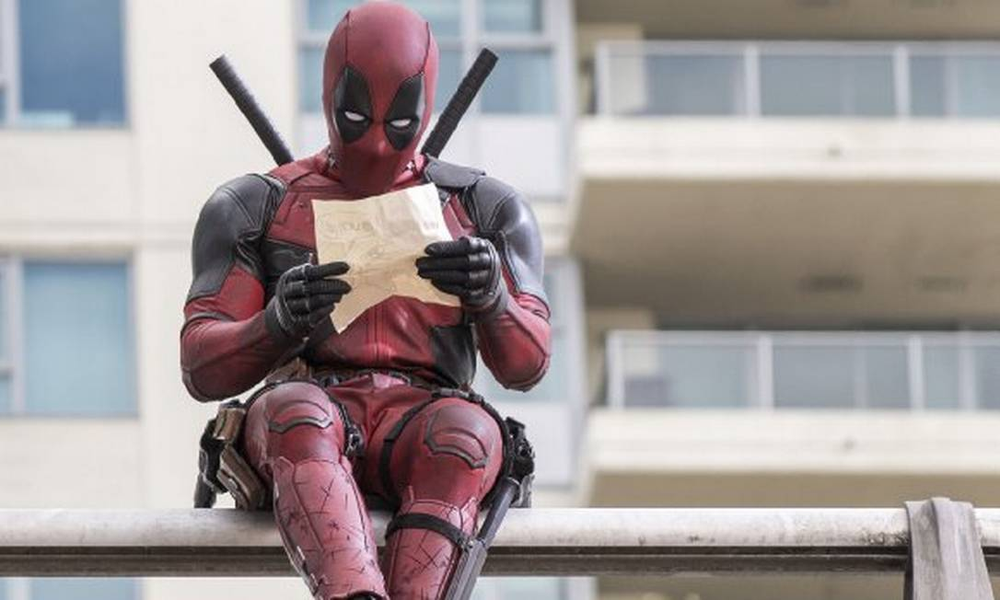

Sobre o Deadpool
Bem-Vindo à página de fãs do Deadpool!
Deadpool é um anti-herói da Marvel Comics, conhecido por seu humor sarcástico e habilidades de combate excepcionais.
Notícias Recentes
Deadpool foi Atropelado
29/02/2026
O anti-herói Deadpool foi atropelado durante uma cena de ação nas ruas de Nova York,
segundo fontes da produção.
Fiel ao seu estilo irreverente, o personagem sobreviveu ao acidente graças ao seu fator de
scura acelerado e ainda fez piada da situação. O caso arrancou risadas da equipe e dos fãs nas redes sociais.
&docid=SVo0pW0iUm5DsM&tbnid=-1E10pY8nhTHqM&vet=12ahUKEwihi_Xz2_eSAxWAs5UCHcDpOJ0QnPAOegQIFhAB..i&w=341&h=500&hcb=2&ved=2ahUKEwihi_Xz2_eSAxWAs5UCHcDpOJ0QnPAOegQIFhAB){kind=link}
Saiba mais...
Deadpool está perdido
22/01/2026
O anti-herói Deadpool está oficialmente… perdido!
Segundo fontes do “multiverso”,
ele foi visto andando em círculos, discutindo com o próprio narrador e culpando o roteiro pela confusão.
Testemunhas afirmam que ele tentou usar o GPS, mas acabou entrando no universo errado.
Apesar do sumiço temporário, especialistas garantem que,
com seu fator de cura e sua total falta de noção, é só questão de tempo até ele aparecer quebrando a quarta parede novamente.
Saiba mais...
Deadpool causa confusão em aeroporto
22/02/2026
O anti-herói Deadpool foi detido brevemente após tentar embarcar com um “arsenal
totalmente decorativo”, segundo ele.
Funcionários relataram que o personagem discutiu com o detector de metais antes de ser liberado
depois de autografar a sala de segurança.
Saiba mais...
Deadpool anuncia carreira musical
26/02/2026
Em publicação surpreendente, Deadpool revelou que está gravando seu primeiro álbum de “rap romântico de ação”.
O projeto, ainda sem data de lançamento, promete letras intensas,
explosões ao fundo e várias indiretas para heróis da Marvel Comics.
Saiba mais...